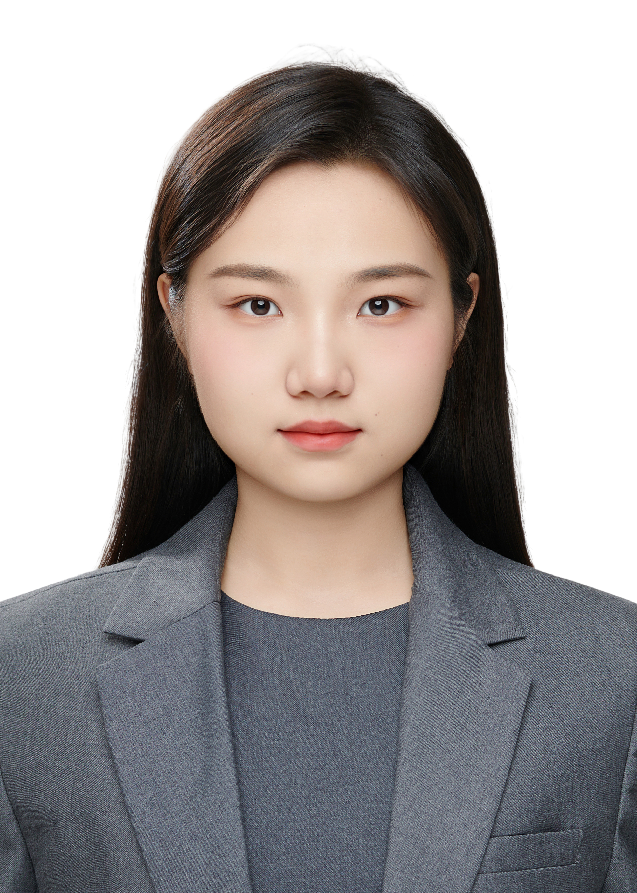
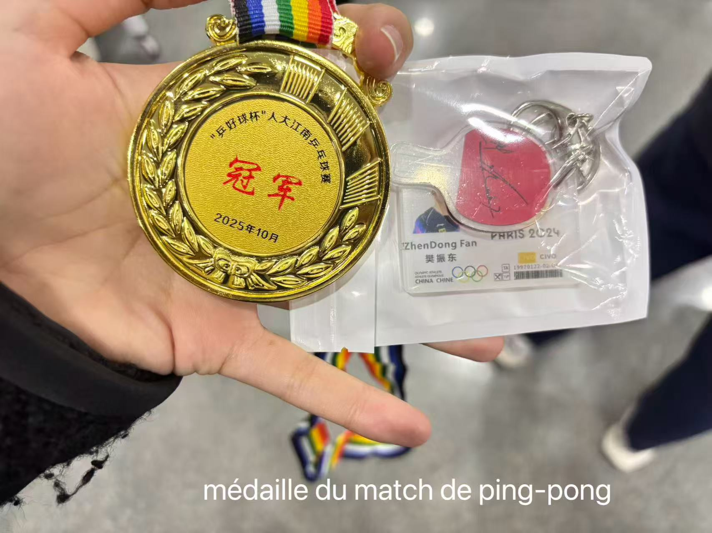
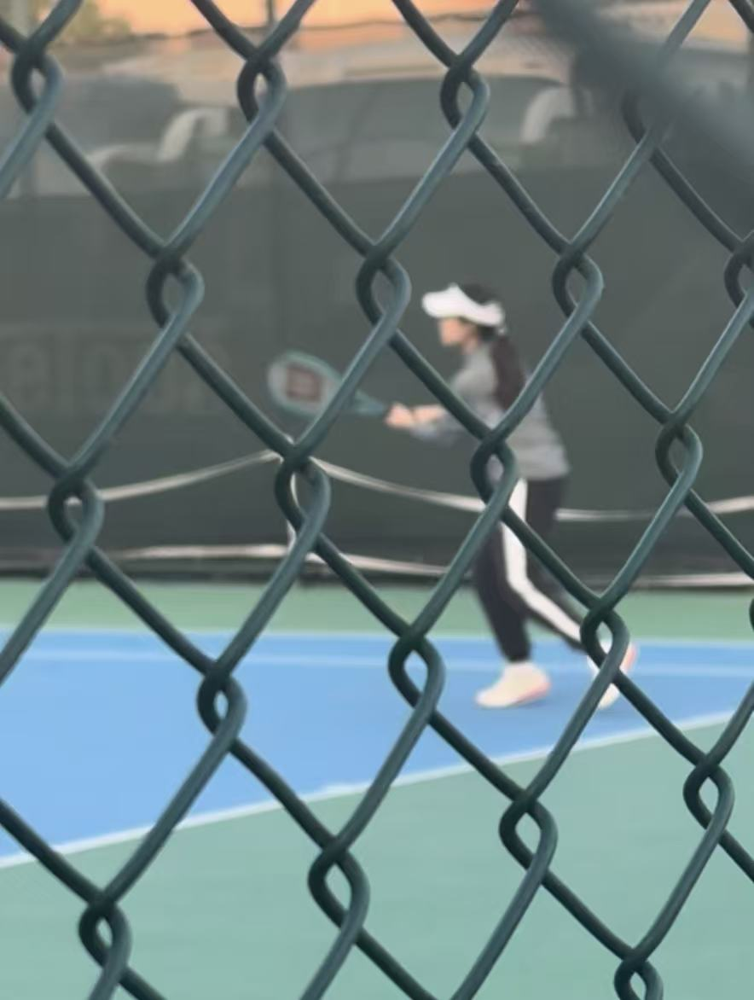
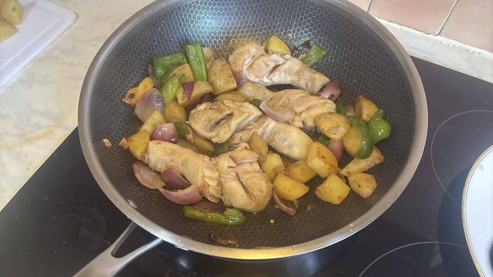
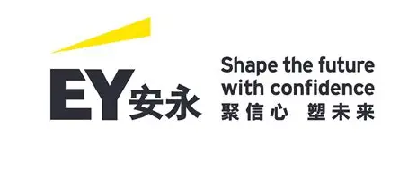
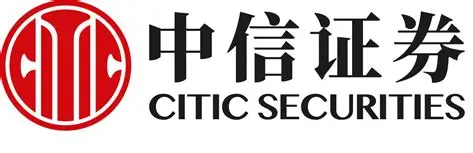

JIAQIAN HU · KEDGE MARSEILLE

Je m'appelle Jiaqian Hu, mais ici, c'est Garance ! De Renmin à KEDGE Marseille, j'étudie la finance. Avec Decoder, je découvre aussi le code. Bienvenue sur ma page !
« Au milieu de l'hiver, j'apprenais enfin qu'il y avait en moi un été invincible. »
— Albert Camus
MON PETIT BON PLAN
Un site que j'aime : Too Good To Go. Des paniers surprise à petit prix et moins de gaspillage : mon budget d'étudiante en échange apprécie l'idée !
Découvrir Too Good To Go ↗


J'aime bouger, jouer et tester des recettes. Pour un match ou un repas entre amis, je suis partante !
Projet de groupe · KEDGE
J'aime l'idée de mieux utiliser ce qui existe déjà, comme avec Too Good To Go. Avec mon groupe, on imagine une plateforme de prêt gratuit et de location à petit prix entre étudiants de KEDGE et de Luminy.
Une perceuse ou un ustensile pour quelques heures, sans tout acheter. Profils vérifiés, photos avant/après et avis : de quoi prêter plus sereinement.
Dépenser moins et faire circuler les objets. Et au passage, rencontrer ses voisins.
Projet en cours de conception, à tester dans une petite communauté.
Deux stages pour comprendre ce qu'il y a derrière les chiffres.

Audit · Beijing · février–mars 2026
J'ai effectué des confirmations externes, vérifié des pièces comptables et participé aux inventaires physiques. J'ai aussi préparé des dossiers de travail pour des audits financiers et des projets d'introduction en bourse.

Finance · Suzhou · juillet–août 2025
J'ai contribué à une étude sur les équipements d'imagerie intelligents, avec une visite chez KEDACOM. J'ai suivi les marchés chinois et analysé des ETF, notamment leurs frais et leurs écarts de suivi.
Un autre petit pas : CFA Level I validé.
Un message, une idée ou juste un bonjour :
jiaqian.hu@kedgebs.com